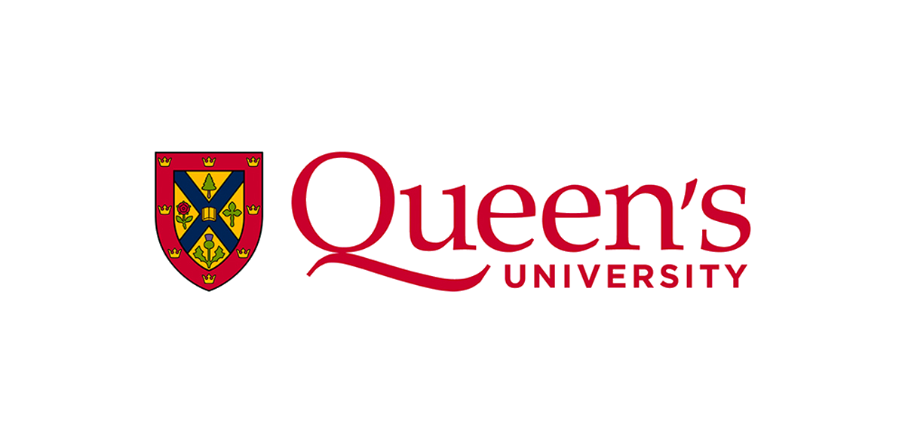

Queen's University
Smith School of Business - Comprehensive Accounting Program
- Mathematics, Statistics, Economics, Finance
- Humanities, Natural Sciences, Behavioral Sciences
- Key Courses: Accounting 101, 102, 201, 202
- Developed Foundational Knowledge In:
- Financial Accounting
- Cost Accounting
- Tax Planning
- Auditing